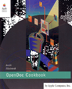

Inside Macintosh: OpenDoc Cookbook
OpenDoc is a revolutionary cross-platform technology that makes developing software significantly easier. The OpenDoc Cookbook shows you how to create OpenDoc software components, called part editors, for the Mac OS platform. The book contains source code for a complete but basic part editor implemented by the OpenDoc engineering team at Apple Computer to illustrate the correct way to code to the OpenDoc programming interface. The source code is accompanied by step-by-step explanations. The book contains- instructions for setting up the Macintosh Programmer's Workshop (MPW) development environment to write OpenDoc software
- annotated listings explaining the methods that implement the SamplePart part editor
- descriptions of other sample part editors created by the OpenDoc engineering team to illustrate more advanced features
- summary descriptions of software utilities provided with OpenDoc for the Mac OS
- an introduction to the System Object Model (SOM) technology underlying OpenDoc
Availability: Click below to obtain Inside Macintosh: OpenDoc Cookbook in any of the following formats.

|
Acrobat (3.5MB) |